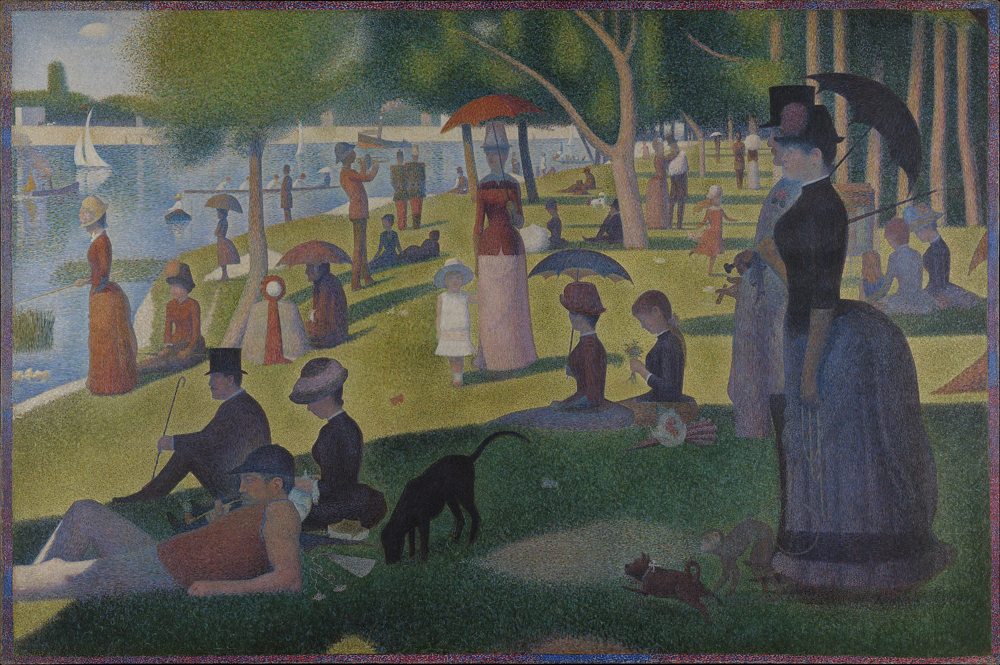
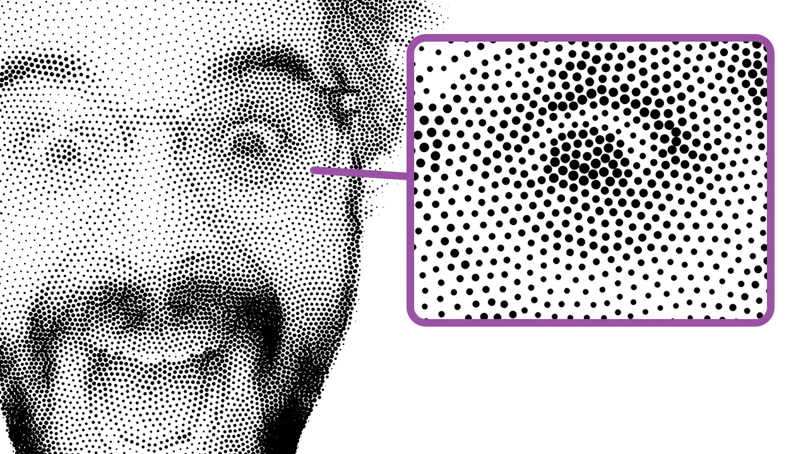
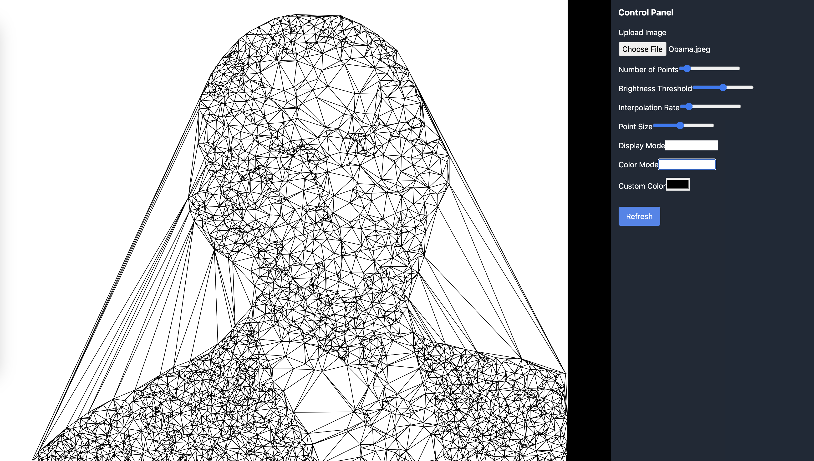
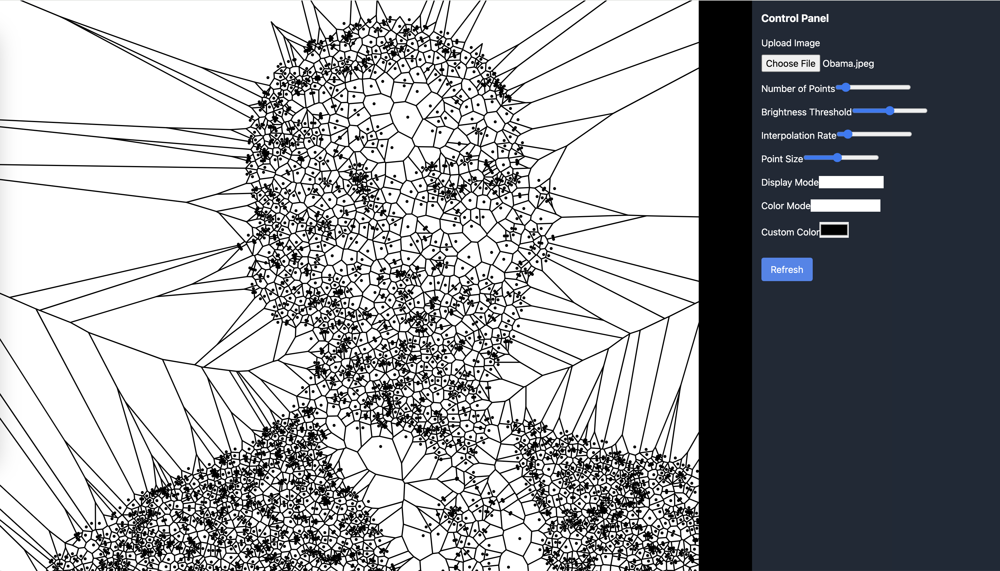
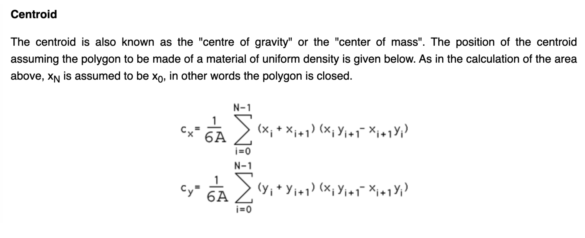
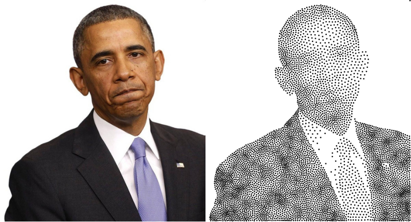
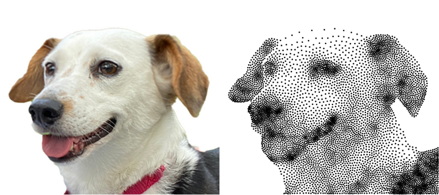

00. Proposal and Literature Research


In the beginning, when I found Daniel Shiffman's new
coding challenge about stippling, I thought of
Pointillism, a painting technique pioneered by French
artist Georges Seurat during the Post-Impressionist
period. Therefore, my initial project proposal was to
extend the stippling project into a Pointillism filter
app—just applying the color method Seurat used in his
works. However, after a deeper dive into some papers
about digital Pointillism, I realized that stippling and
Pointillism are totally different painting methods, and
therefore the digital methods to generate them with a
computer are also totally different. The methods
computer scientists use to generate Pointillism-style
images are too complex for me and for this course
project, so I decided to focus only on stippling.
01. Build the Web App Framework and First Try with
Delaunator

Initially, I wanted to create my project as a
single-page web app that allows users to upload images
and get filtered stippling images with a control panel
to adjust some parameters. I quickly made this with
Next.js. For manipulating pixels, I chose p5.js, which
I'm familiar with and is popular in the web development
field. For calculating Delaunay triangles based on a
group of points, I chose Mapbox's Delaunator because it
performs the fastest in comparison.
The first step was to generate a group of random points
from the input image by setting a brightness threshold
for each pixel. Then, I used the Delaunator library's
function to easily get the Delaunay triangles.
result was quite good, and it really ran fast as
expected!
02. Calculate Voronoi Diagram Based on Delaunay
Triangles

Compared with d3-delaunay, which was used by Daniel
Shiffman in his project, Mapbox's Delaunator is a
relatively low-level library without an API to generate
Voronoi diagrams directly. Therefore, I decided to code
the algorithm myself.
The Vertices of Voronoi polygons are just the
circumcenters of Delaunay triangles. Using the formula
on this website: [Circumcenter of a
Triangle](https://byjus.com/maths/circumcenter-of-a-triangle/),
I completed the calculateVoronoi function.
The result was good as follows.
03. Optimize Points Distribution with Lloyd's Algorithm
The most important part of the paper
Weighted Voronoi Stippling is about Lloyd's
algorithm. The basic idea is to calculate the centroids
of each Voronoi cell or polygon and move the
corresponding point to its location, then generate a new
Voronoi diagram and repeat this process until a stable
point distribution is achieved, resulting in the final
stippling image.
To implement this in code, I got help from
Paul Bourke's website
on how to calculate the centroid coordinate of a
polygon.

To calculate the weights of each pixel based on its
brightness, I referred to
W3C's definition of Relative Luminance: "For the sRGB color space, the relative luminance of
a color is defined as L = 0.2126 * R + 0.7152 * G +
0.0722 * B".
With the knowledge above, I finished the updatePoints
function. The final program could run, but it ran very
slowly, which I thought might be related to some
performance or compatibility issues with p5.js. It might
only perform better on its official web editor. So, I
migrated my algorithm to a p5.js web editor sketch. The
final result was relatively satisfactory.

The face part of this portrait is not good, which I
think is because of insufficient grayscale contrast. An
image with stronger grayscale contrast may perform
better.

Yes it is! Bye! :)